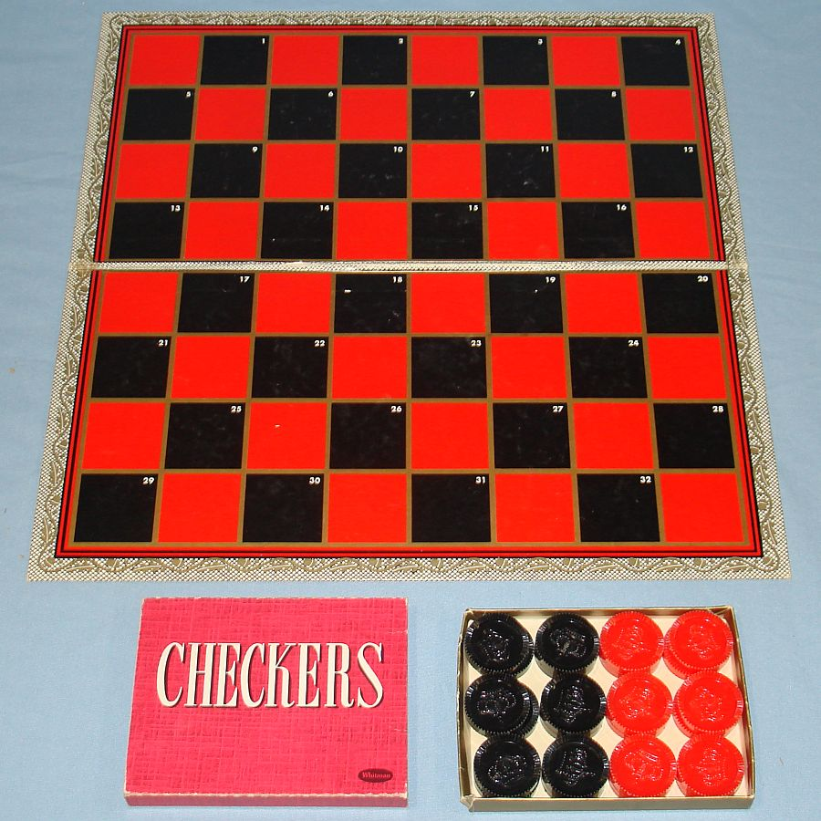

Joey Cannon's Game Description Page

(Image courtesy of vintagetoys.com)
This is the description page for Joey's html checkers game.
GamePlay:
This is a two player game. Choose your colors and enter your names on the next page.
This game is played by clicking first on the checker that you wish to move, and then
clicking on the space you wish to move it to. Only single jumps are allowed. Your
pieces may only move forward until they have reached the other side of the board,
where they become kings and can then move forward or backward.
Here is a
link to the Wikepedia
page for Checkers (also called "Draughts").
Preliminary software design:
Variables:
Player 1 Name
Player 2 Name
Starting number of checkers (both) = 12 (const)
Current number of checkers (red and black)
Current number of kings (red and black)
Position (maybe have x and y position, or just give each valid square a name)
Functions:
Move Function - Detect click and drag, or just allow user to click on a checker, and then click on a space to move it to.
Jump Function - May use part of the move function to validate the movement, but will also get rid of the oponent's checker.
Win Function - Display a win text when one player's checker count reaches zero.